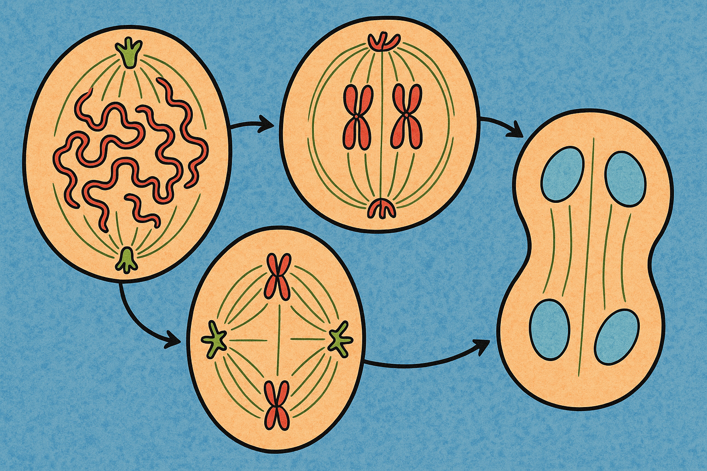

La mitosis
La mitosis es un proceso fundamental para la vida. Durante la mitosis, una célula duplica todo su contenido, incluyendo sus cromosomas, y se divide para formar dos células hijas idénticas. Debido a lo crítico de este proceso, los pasos de la mitosis son controlados cuidadosamente por varios genes. Cuando la mitosis no se regula adecuadamente, pueden producirse problemas de salud como el cáncer.

La miosis
La meiosis, asegura que los humanos tengan el mismo número de cromosomas en cada generación. Es un proceso de dos pasos que reduce el número de cromosomas a la mitad, de 46 a 23, para formar espermatozoides y óvulos. Cuando los espermatozoides y los óvulos se unen en la concepción, cada uno aporta 23 cromosomas, por lo que el embrión resultante tendrá los 46 habituales. La meiosis también permite la variación genética a través de un proceso de mezcla de ADN mientras las células se dividen.